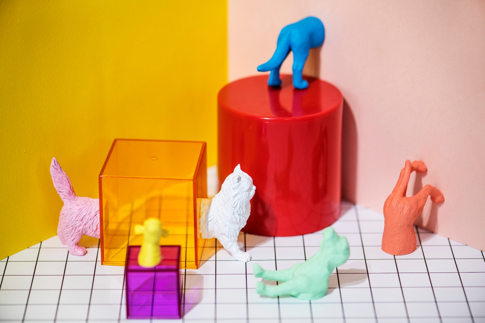
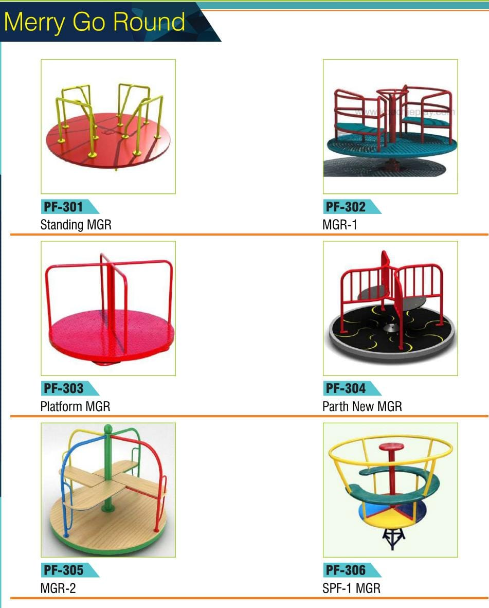
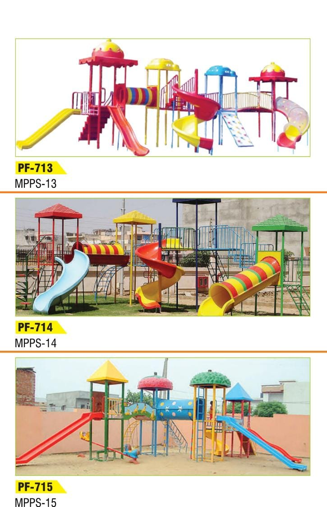
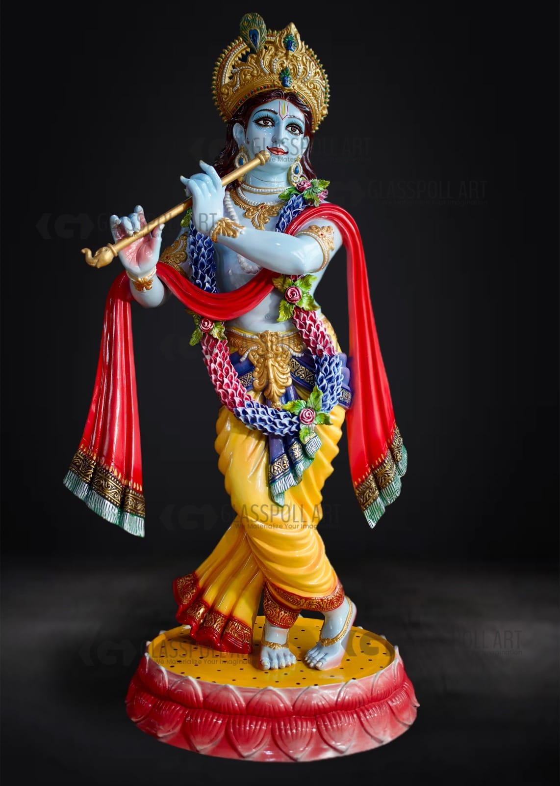
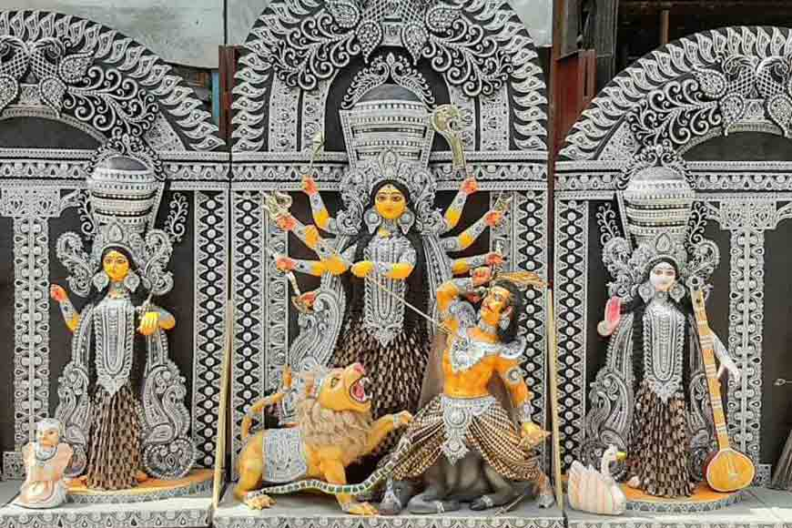
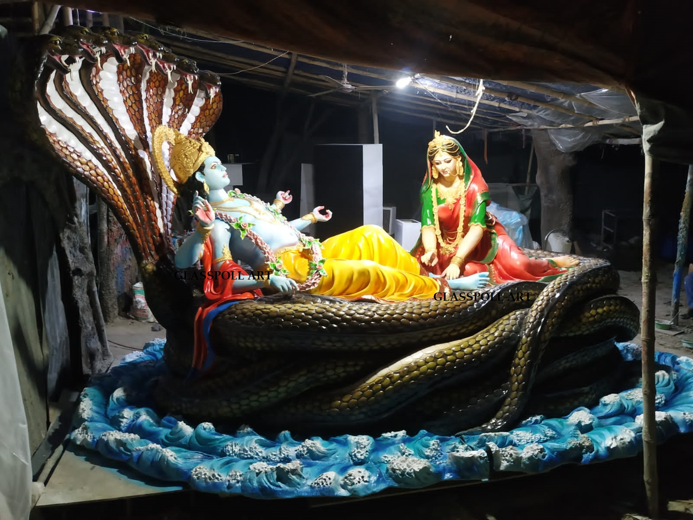
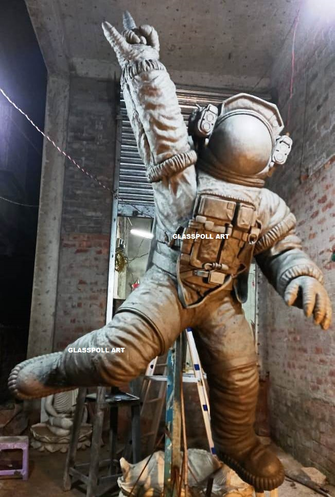

A Complete Buyer’s Guide to Fiberglass Durga Idols
Durga Puja is more than a festival—it’s a celebration of devotion, artistry, and cultural heritage. Traditionally, idols of Maa Durga were crafted from clay, symbolizing a return to nature. However, with evolving needs, fiberglass Durga idols have emerged as a modern, practical, and visually stunning alternative.This comprehensive buyer’s guide will help you understand everything you need to know before purchasing a fiberglass Durga idol—from benefits and design options to pricing factors and maintenance tips.What is a Fiberglass Durga Idol?Fiberglass Durga idols are made using fiber-reinforced plastic (FRP), a material composed of glass fibers and resin. This combination creates a structure that is strong, lightweight, and highly durable.Unlike traditional clay idols, fiberglass idols are designed for long-term use and can be reused for multiple festivals without damage.Why Choose Fiberglass Durga Idols?1. Exceptional DurabilityFiberglass idols are known for their strength and resistance to cracking, moisture, and environmental damage.They can withstand humidity, rain, and temperature changes—making them ideal for both indoor and outdoor installations.2. Lightweight & Easy HandlingDespite being strong, fiberglass idols are significantly lighter than clay or marble idols.This makes transportation, installation, and storage much easier.3. Reusable for YearsOne of the biggest advantages is longevity. These idols can be reused year after year, making them cost-effe...
Read More →
Large Fiber Nutcracker Statue: Make a Bold Holiday Statement
The holiday season is all about creating magical, memorable experiences. From twinkling lights to grand Christmas trees, festive décor has the power to transform ordinary spaces into enchanting wonderlands. Among the most striking decorations available today, the large fiber nutcracker statue stands out as a true showstopper. Bold, elegant, and durable, it commands attention while preserving the timeless charm of holiday tradition.Whether placed at the entrance of a shopping mall, in front of a luxury hotel, or as a centerpiece in a grand residential display, a large fiber nutcracker statue makes an unforgettable statement.A Timeless Holiday Icon ReimaginedThe nutcracker has long been associated with Christmas tradition, inspired by European folklore and classic holiday performances like The Nutcracker Ballet. Traditionally carved from wood, nutcrackers symbolized protection and good fortune. Over time, they became beloved decorative figures representing festive joy and royal elegance.Today, large fiber nutcracker statues preserve that traditional aesthetic while incorporating modern materials and construction techniques. Crafted from fiberglass or reinforced fiber materials, these statues replicate intricate details—bold uniforms, ornate crowns, expressive facial features—while offering superior strength and longevity.The result? A classic holiday symbol redesigned for contemporary, large-scale displays.Make an Immediate Visual ImpactSize matters when it comes to commer...
Read More →
Fiber Nutcracker Statue: A Durable and Elegant Festive Decoration
When the holiday season arrives, decorations transform ordinary spaces into magical experiences. Among the most iconic symbols of Christmas charm and tradition stands the nutcracker. While traditional wooden versions remain popular, the fiber nutcracker statue has emerged as a modern favorite for homes, businesses, malls, hotels, and event spaces. Combining durability, elegance, and versatility, these statues are redefining festive décor in a big way.A Timeless Symbol with a Modern UpgradeNutcrackers have long been associated with European folklore and holiday traditions. Historically crafted from wood and designed as functional nut-cracking tools, they evolved into decorative pieces symbolizing protection and good luck. Today, fiber nutcracker statues carry forward that heritage while offering significant practical advantages.Made from high-quality fiberglass or reinforced fiber materials, these statues maintain the classic royal soldier look—complete with bold uniforms, tall hats, and expressive features—while being stronger and more adaptable than traditional materials.Built to Last: Exceptional DurabilityOne of the biggest advantages of a fiber nutcracker statue is its durability. Unlike wooden décor that may crack, warp, or deteriorate over time, fiberglass statues are resistant to moisture, temperature fluctuations, and general wear and tear.This makes them ideal for: Outdoor holiday displays Commercial storefront decorations Shopping malls and public...
Read More →
Why Fiberglass Art Is Gaining Massive Popularity Across Europe in 2025
In recent years, Europe has witnessed a remarkable evolution in the world of interior design, public art, and architectural creativity. Among the many artistic mediums gaining attention, fiberglass art has emerged as one of the most influential forces in modern European aesthetics. As we step into 2025, fiberglass sculptures, murals, installations, and décor elements have become top choices for designers, commercial developers, curators, and homeowners alike.But what exactly is driving this surge in demand? Why is fiberglass art experiencing massive popularity across Europe?Let’s explore the cultural, aesthetic, and functional reasons behind this growing trend.1. Fiberglass Offers Unmatched Versatility for European Design TrendsEurope is a mosaic of architectural styles – from minimalist Scandinavian interiors to the luxurious elegance of French, Italian, and Spanish décor. Fiberglass fits effortlessly into every design theme due to its incredible versatility.How fiberglass adapts to various European styles: Scandinavian minimalism: Clean, smooth finishes and organic shapes align perfectly with Nordic simplicity. Mediterranean interiors: Fiberglass can mimic textures like stone, wood, and ceramic effortlessly. Modern industrial spaces: Sharp lines, geometric shapes, and bold large-scale pieces make fiberglass ideal. Classical European themes: Sculptures resembling marble or bronze can be crafted at a fraction of the weight and cost. This adaptabilit...
Read More →
7 Expert Tips for Choosing the Perfect Fiberglass Durga Idol
Durga Puja is not just a festival—it's a deep spiritual and cultural expression of devotion, art, and tradition. In recent years, fiberglass Durga idols have grown in popularity due to their lightweight nature, durability, artistic detailing, and eco-friendliness. But with so many options available, how do you choose the right one?Here are 7 expert tips to help you select the perfect fiberglass Durga idol for your celebration, whether you’re organizing a community pandal or looking for a home puja setup.1. Focus on Proportions and IconographyThe beauty of a Durga idol lies in its symbolic precision. Make sure the idol follows traditional iconographic guidelines—ten arms holding symbolic weapons, the lion (her vehicle), and Mahishasura under her feet. Proportions should be balanced to reflect serenity and power.Expert Tip: Ask the artisan if the design is based on shastric references or classical iconography to ensure spiritual authenticity.2. Inspect the Quality of Fiberglass MaterialNot all fiberglass is created equal. High-quality fiberglass should be strong, crack-resistant, weatherproof, and capable of holding detailed paintwork. Low-grade fiberglass may deteriorate over time or show uneven surfaces.Expert Tip: Always check for smooth finishes, fine edges, and structural stability. At Glasspoll Art, we use premium-grade fiberglass built to last for years.3. Choose the Right Size for Your SpaceWhether you’re setting up at home or in a large community pandal, size m...
Read More →
How Glasspoll Art Ensures Quality in Every Fiberglass Sculpture
Fiberglass sculptures are not just decorative pieces—they are a blend of artistry, craftsmanship, and precision engineering. At Glasspoll Art, we take immense pride in delivering high-quality, durable, and aesthetically stunning fiberglass sculptures that meet global standards.But how do we ensure consistent quality in every piece we create?In this blog, we’ll take you behind the scenes to explore the meticulous processes, skilled craftsmanship, and strict quality control measures that make Glasspoll Art a trusted name in fiberglass sculptures worldwide.1. Selection of Premium Raw MaterialsThe foundation of a high-quality fiberglass sculpture lies in the raw materials used. At Glasspoll Art, we source only the best:High-grade fiberglass resin for durability and weather resistance.Reinforced fiberglass matting for structural strength.Non-toxic, eco-friendly pigments for vibrant, long-lasting colors.UV-resistant coatings to prevent fading under sunlight.By using imported and locally tested materials, we ensure that every sculpture withstands time and environmental factors.2. Skilled Artisans with Decades of ExperienceUnlike mass-produced factory items, our sculptures are handcrafted by master artisans with years of expertise. Our team includes:Traditional sculptors who shape the initial clay models with precision.Fiberglass molding experts who ensure seamless casting.Professional painters who add intricate detailing by hand.Many of our craftsmen come from...
Read More →
Glasspoll Art: Leading Manufacturer and Exporter of Fiberglass Durga Idols
Durga Puja, one of the most celebrated festivals in India, is a time of devotion, cultural vibrancy, and artistic splendor. At the heart of these celebrations are the magnificent Durga idols, which symbolize the victory of good over evil. Among the various materials used for crafting these idols, fiberglass has emerged as a modern and sustainable choice, combining durability, lightweight properties, and exquisite detailing. Glasspoll Art, a renowned name in the industry, stands out as a leading manufacturer and exporter of fiberglass Durga idols, offering unparalleled craftsmanship and quality.The Rise of Fiberglass Durga IdolsTraditionally, clay has been the primary material for sculpting Durga idols. However, with evolving preferences and logistical challenges, fiberglass has gained significant popularity. Fiberglass idols are not only lighter but also more durable and weather-resistant, making them an ideal choice for both domestic and international markets. Additionally, fiberglass allows for intricate detailing, ensuring that the idols retain their divine beauty while being easier to transport and maintain.Glasspoll Art has been at the forefront of this transformation, blending traditional artistry with modern technology to create fiberglass Durga idols that resonate with cultural and spiritual significance.What Sets Glasspoll Art Apart?Exquisite CraftsmanshipGlasspoll Art takes pride in its team of skilled artisans who pour their expertise and passion into every creatio...
Read More →
Merry-Go-Rounds for Children’s Parks
Glasspoll Art offers a wide range of merry-go-rounds designed to bring joy and excitement to children while ensuring their safety. Crafted from high-quality materials like FRP (Fiber Reinforced Plastic), our merry-go-rounds are built to withstand heavy use and harsh weather conditions, making them a reliable choice for parks, schools, and recreational areas.Our merry-go-rounds come in various sizes and designs, suitable for children of different age groups. Each piece is designed with smooth edges, sturdy structures, and non-toxic finishes to provide a safe and fun play experience. The vibrant colors and innovative designs enhance the appeal of any play area while promoting physical activity and social interaction among kids.Glasspoll Art takes pride in manufacturing products that meet global safety and quality standards. As a trusted manufacturer and exporter, we cater to clients worldwide, ensuring timely delivery and customized solutions that match your specific requirements.Choose our FRP merry-go-rounds to create engaging play spaces that bring smiles to children’s faces while offering long-lasting durability and unmatched quality. Let Glasspoll Art help you transform your park or playground into a hub of fun and activity! ...
Read More →
Children park item
High-Quality Children Park Items by Glasspoll ArtGlasspoll Art is a trusted name in the manufacturing and exporting of premium children park items. With years of expertise, we create a wide range of play equipment that combines fun, safety, and durability. Our products include slides, swings, climbers, seesaws, merry-go-rounds, and more, all made with high-quality fiberglass and other durable materials to withstand heavy use and all weather conditions.At Glasspoll Art, we understand the importance of providing safe and engaging spaces for children to play. That’s why our designs prioritize safety with smooth finishes, sturdy structures, and compliance with global quality standards. Each item is crafted to spark creativity, encourage physical activity, and ensure endless hours of fun for kids of all age groups.Whether you need play equipment for public parks, schools, residential complexes, or recreational facilities, Glasspoll Art delivers customized solutions to suit your requirements. As a leading exporter, we cater to clients worldwide, ensuring timely delivery and top-notch quality. Enhance your outdoor spaces with our innovative and vibrant children park equipment designed to bring joy to children while meeting the highest safety standards. Choose Glasspoll Art for reliable products that stand the test of time! ...
Read More →
Lord Krishna Statue
Long Description:If you’re looking to bring a bit of spirituality into your home, consider adding a Krishna idol from your collection to your space. A Fiberglass Krishna Idolcan provide numerous benefits, from giving you a sense of peace and calm to attracting others to your home who wish to learn more about the Hindu faith. Benefits of Having Krishna Idol Use in Home Décor:Once you decide to place the Shri Krishna idol in your home, you’ll begin to notice several benefits. First of all, installing a Shri Krishna statue in your home will inspire you to increase your devotional activities and daily worship of Lord Krishna, which is one of Hinduism’s most excellent spiritual practices. At first, it might seem strange to conduct prayers and rituals inside your home rather than at a temple or shrine.What Are Different Ways To Buy Shri Krishna Murti Online?If you are looking to adorn your home with something beautiful, then it might be time to look into Shri Krishna murti online. Statues are an excellent way to decorate your home, but there are several things you should consider before placing one in your house. For example, you’ll want to make sure it isn’t too big or small—statues are supposed to represent an actual person or God—and that it has proper balance and proportion.How Can A Shri Krishna Murti Help You?Shri Krishna is believed to be one of Vishnu’s ten incarnations. He is worshipped across India and other parts of Asia. In Hinduism, he...
Read More →
Celebrating Tradition and Art: Kumartuli Durga Idols by Glasspoll Art, Your Trusted Durga Idol Manufacturer
As the festival of Durga Puja approaches, the vibrant and bustling lanes of Kumartuli in Kolkata come alive with the creation of magnificent Durga idols. Known for its skilled artisans and traditional craftsmanship, Kumartuli is the heart of Durga idol manufacturing. Among the renowned manufacturers in this iconic locality, Glasspoll Art stands out for its exceptional quality and artistry. As a leading Durga idol manufacturer, Glasspoll Art brings the divine beauty and cultural heritage of Kumartuli to life. In this blog, we explore the significance of Kumartuli Durga idols and why Glasspoll Art is the preferred choice for these revered creations.The Significance of Kumartuli Durga IdolsKumartuli, a historic neighborhood in Kolkata, has been the epicenter of idol-making for centuries. The artisans here, known as "Kumars," have passed down their skills and traditions through generations. Kumartuli Durga idols are renowned for their intricate detailing, expressive features, and adherence to traditional aesthetics. These idols are not merely artistic creations; they are embodiments of faith and devotion.Durga Puja, one of the most celebrated festivals in India, marks the victory of Goddess Durga over the demon Mahishasura. The festival is characterized by elaborate rituals, grand celebrations, and the worship of beautifully crafted Durga idols. Each Kumartuli Durga idol is a testament to the devotion and craftsmanship of the artisans, making them an integral part of the festival...
Read More →
Revolutionizing Tradition: The Journey from Clay to Fiberglass Durga Idols
Durga Puja, the grand festival celebrating the triumph of good over evil, holds a special place in the hearts of Bengalis, and no other city captures the essence of this celebration quite like Kolkata. The capital of West Bengal transforms into a cultural kaleidoscope during the puja season, adorned with lights, colors, and the spirit of festivity. Central to this celebration is the creation of the iconic Durga idol, a masterpiece that embodies the rich cultural heritage of Kolkata and the Bengali community.The Pomp and Grandeur of Kolkata's Durga Puja Kolkata's Durga Puja is not merely a religious event; it is a cultural extravaganza that engulfs the entire city in a festive fervor. The streets come alive with vibrant decorations, mesmerizing light displays, and the rhythmic beats of traditional dhak drums. Pandals, elaborately themed temporary structures housing the Durga idols, compete for attention with their innovative designs and artistic brilliance.The artistic and cultural heritage of Kolkata finds expression in every aspect of Durga Puja. From the mesmerizing sound of conch shells announcing the arrival of the goddess to the aroma of traditional Bengali sweets wafting through the air, the celebration engages all the senses. Families and communities come together, reflecting the communal spirit that defines Bengali culture.The Making of Durga Idol: A Fusion of Art and DevotionAt the heart of Kolkata's Durga Puja is the creation of the Durga idol, a process t...
Read More →
Fiberglass Lord Vishnu Idols
It’s true that you must have seen various depiction of Lord Vishnu in pictures and images. Somewhere, he is riding Gadura (the King of Birds); sometime, he is presented with 'Sankha-Chakra-Gada-Padma' and in many pictures, you have seen him, lying on a Serpent Bed that is known as 'Ananta-Sajya'.It is always said that Lord Vishnu is connected with this huge serpent with many heads in different incarnation. According to Ancient Hindu Sculpture, this huge serpent is known as Seshanaag and Lord Vishnu lies on it while taking rest.There is certain significance of this depiction. Lord Vishnu has taken various avatars and he is the symbol of restoration of the world from the sea of sin. It is true that Gadura is regarded as the 'Vahana' (vehicle) of Lord Vishnu, but Seshanaag is equally co-related with Lord Vishnu, even in his every incarnation.Lord Vishnu restores the world at the right time when the world has seen much of the sin. Seshanaag is the symbol of ‘Anant' means infinite. Lord Vishnu guides the time to be favorable on human kind. That's why he is seen lying on a serpent bed.Lord Vishnu has several forms and shapes to save the world every time. Glasspoll Art recently has taken an initiative of decorating Lord Vishnu Idol lying on Seshanaag with Fiberglass materials which looks really great. Glasspoll Art is a leading manufacturer of Fiberglass Idols, Statues and Sculpture. They have been working on different creative ideas on Fiberglass statues, Fib...
Read More →
Fiberglass Krishna And Radha
Lord Krishna is the Hindu God of Love, Compassion, and And Protection. He is known as the Dark One, he is also depicted with dark blue skin.Krishna, is one of the most widely revered and most popular of all Indian divinities, worshipped as the eighth Incarnation Or Avatar of the Hindu God Vishnu and also as a supreme god in his own right.In Hindu mythology, Lord Krishna's true love is Radha. Radha is a pure and innocent soul who loves Krishna with all of her heart. She loved him like a devotee loves a God, she loved him with devotion, not lust. Her love for Krishna was divine. Krishna became the focus of numerous bhakti (devotional) cults, which have over the centuries produced a wealth of religious poetry, music, and painting. This beautiful sculpture of Lord Krishna and Radha is made of fiberglass products which are quite demanding nowadays....
Read More →Glasspoll Art Shows Their Tribute To Build A Fiberglass Statue Of Frontline Covid Warriors
It was in March two years ago that the first Covid-19 positive infection in Telangana, India was reported and a few days later, the World Health Organization (WHO) declared Covid-19 as a pandemic, capable of circulating across the globe, infecting large swathes of the population and claiming lives in its wake. The deadly virus forced us into research and innovation to develop indigenous vaccines. We also invented cost-effective diagnostics in the form of antiviral drugs, made us understand the nuts and bolts of how the virus behaves. We lost millions of people during Covid-19 pandemic across the world. We also lost many Covid Warriors who dedicated their lives to save our life. Corona warriors are the real super heroes of our world. We believe that God exists in the form of corona warriors in this life taking situation. These Covid Warriors are Doctors, Nurses, Paramedical Staff, Security Guard and Cleaning Staff. Putting their own lives at risk with selfless determination for the sake of saving lives, they are our heroes in these challenging times.Glasspoll Art is a leading manufacturer and exporter of Fiberglass Sculpture shows their tribute to frontline Covid Warriors who sacrificed their life while saving patients during the ongoing COVID-19 pandemic. The manufacturer made a huge Fiberglass Statue of Covid Warriors which is not only attractive but shows their true intention of love and respect to those who lost their lives during pandemic. Th...
Read More →
Navaratri Durga Idol
Navadurga which literally means the nine forms of Goddess Durga. The goddess symbolizes the nine forms adi-shakti Durga. During Navratri, we awaken the energy aspect of Godhead in the personification of the universal mother Goddess Durga. Navratri, nine nights considered to be very auspicious to worship the nine planets and nine divinities.The names of 9 forms of Maa Durga are Shailputri, Brahmacharini, Chandraghanta, Kushmanda, Skandamata, Katyayini, Kaalratri, Mahagauri and Siddhidhatri. They are together worshipped during the Navrātri Vrata (Nine Divine Nights).Each goddess has a different form and a special significance. Nava Durga, if worshipped with religious fervor during Navaratri, it is believed, to bestow spiritual fulfillment. Nava also means ‘nine’ – it denotes the number to which sages attach special significance.1st form of NavaDurga - Shailputri DeviShailputri is the first form of NavaDurga; and is also known as Bhavani, Parvati or Hemavati. She is known to be the earthly essence. Maa Shailputri is the major and the absolute form of the Goddess. Since she was the wife to Lord Shiva and is known as Parvati. She took birth as the daughter of Lord Himalaya; due to which she is named as Shailputri – the daughter of mountains. 2nd form - BrahmachariniGoddess Parvati took birth at the home of Daksha Prajapati in the form of the great Sati. Her unmarried form is worshipped as the 2nd form of NavaDuga - Goddess Brahmacharini. She signifies as...
Read More →
Fiber children sculpture
Over the last couple of years, Fiber children sculptures are in high demand. These statues are perfect option to décor a place. You can place the statue inside and outside in a children’s park, primary schools, play schools, theme parks and other places to help kids enjoy the best experience. There is no doubt, these life-size fiberglass sculpture is a splendid showpiece to enhance the beauty of any public or private place.Due to its unlimited flexibility, fiberglass is slowly becoming a revolutionary material in the world of interior and exterior designing. You can use small Fiberglass statues of different things like gods and goddesses in prayer altars instead of those made of clay or any kind of metallic substance.Our experts at Gasspoll Art, working on various aspects, engineers working on preparing the fiberglass mold to the shape of the clay that is finalized after the confirmation, experts than start fiber casting, brassing and cleaning.Our experienced team of painters then applies the primer after cleaning. Applying primer ensures the longevity of the color on the sculptures. Big fiberglass animal structures are normally placed on garden decoration, so putting a primer before putting on any color is a must step. Also using a primer protects the Fiber children sculpture from corrosion, rust from any kind of weather condition.Glasspoll Art is a leading manufacturer and exporter of Fiberglass statues in India. They have been researching and working o...
Read More →
Why Fiberglass Hindu God Statues Are Trendy Among Consumers?
It’s quite obvious that the popularity of Fiberglass Hindu god statues have increased a lot than never before. Fiberglass is a type of fiber-material made from glass fiber. It’s popular among people due to its high longevity and smooth polishing nowadays.Fiberglass is extremely strong, lightweight and flexible. Now consumers prefer these types of materials to decorate their home and commercial places. Fiberglass can be molded into many complex shapes, beautiful architecture and making it an excellent construction material. Not only that fiberglass is widely used in bathtubs, boats, aircrafts, roofs etc. Fiberglass Hindu god statues are extremely popular nowadays to those people who desire inner peace and harmony. These statues are strong and durable. They can be dropped and put through stress and they don’t break. The paint can be washed without discoloring or fading. Most importantly, this makes the sculpture perfect during puja celebration. These Fiberglass idols are supposed to be encouragement to people for seeking internal harmony.There are several fiberglass manufacturers available who are quite experienced in this profession. They provide various types of fiberglass sculptures with different Hindu god statues. One can have a genre of historical or mythological statues like the statue of Lord Krishna, Lord Shiva, Durga Idol, Kali Idol, Lord Ganesha and Fiberglass gardenplanter. These are all popular during these days.According to mythology, the...
Read More →
Fiberglass Astronaut Sculpture
Human being always looks for exclusive products for home décor, it’s human nature. If you are also looking for something special to decorate your home, office, amusement park than astronaut sculpture made of Fiberglass can be in your product list. Of course, the design of the astronaut is very cute and very attractive product for decoration.Undeniably, each and every Astronaut has made too many contributions to the development of the space industry, especially the sacrificed astronauts. They are fearless and brave explorers of space. The fiberglass astronaut sculptures vividly reproduce the style of the astronaut in the form of sculpture. This type of statue is a fabulous option and it will increase the beauty of the room.Fiberglass sculptures are unique and seek to break away from traditional representation of physical objects. It explores the relationships of forms of objects, its representation and colors, whereas more traditional sculpture represents the world in recognizable images. Fiberglass Statue design is a type of design that does not attempt to represent an accurate depiction of a visual reality but instead use shapes, colors, forms and gestural marks to achieve its effect.Glasspoll Art is a leading manufacturer and exporter of Fiberglass statues in India. They have been researching and working on different creative ideas with Fiberglass statue, Fiberglass wall panel, Fiberglass idols for the last 15+ years. They have the best fiberglass scul...
Read More →
0-N
The True Essence of Durga Puja:Durga Puja is just not only a festival, it’s a heartfelt emotion for all Bengalis who live in abroad. It doesn’t matter; if a Bengali lives in UK, USA or North America, Bengalis all over the world celebrate Durga Puja from Mahapanchami to Bijoya Dashami with full gratification.Most of the people don’t know that Bengalis who stay in Papua New Guinea or Nigeria celebrate Durga puja and enjoy the festival. It’s a matter of togetherness and just 2-3 families who always get together, arrange everything and celebrate this festival. This is the actual charm of Bengalis and true essence of Durga Puja.For those people who stay out of the country around this time, the four days of Durga Puja encompass everything from festivity and celebration of food, friends, and enjoyment. Bengalis from India, America, Canada and Bangladesh all get connected on this holy festival only. Durga Idol: A Symbol of Worship and StrengthDevi Durga is considered as the feminine epitome of strength. She is depicted in variety of Vedic manuscript as a goddess having feminine prowess, power, determination, wisdom and punishment. She has been glorified in various shastras like Devi Bhagwat Purana. She is considered as a divine potency responsible for keeping this material world in order and decorum. Those who seek prosperity in this material world in terms of material powers and wealth, also ardently worship her. The expression on Ma Durga’s face evokes a sense of love a...
Read More →
Fiberglass Durga Idol
Why To Choose Fiberglass Durga Idols Made by Glasspoll Art? Durga Puja is undoubtedly the most glorious festival in West Bengal and for Bengalis. This greatest festival of autumn allows every Bengali to celebrate the triumph of good over evil to its full glory. Every year, Bengalis celebrate Durga puja with glory and full of enjoyment. We celebrate the occasion mainly from Mahapanchami to Dashami. Dashami is also known as a Dussehra. The last day is called Bijaya Dashami as because this day the idol is submitted in water to wait for the next year. This is the Bengali ritual and this is happening since ancient days.Fiberglass Durga Idols are quite popular nowadays for all those people who admire this festival. People, who live outside of West Bengal, always prefer such products for its high-quality and lightweight materials. The biggest advantage of using Fiberglass wall panel is the statues are eco-friendly. Most importantly it does not cause harm to the nature or environment.Now most of the people are decorating their wall with these elegant Durga wall panel. Today most of the architects and home builders prefer Fiberglass wall panel for its unmatched attributes like beauty and strength. If you are in among those people who look for lightweight products to decorate your home, Fiberglass Durga idol would be the smartest choice. These panels consist of extremely high quality and lightweight that enhances the beauty of your wall as well as house. The creators and artis...
Read More →
Fiberglass Yoga Statues
Decorate Your Room and Workplace with Our Elegant Fiber Yoga StatuesYoga statue and artwork is an indispensable part of mindful meditation and can delight and inspire us whether it represents Yoga Postures or other aspects of this ancient Vedic philosophy, including mythology characters and sages, and yoga-related symbols.You may enjoy decorating your home and workplace with beautiful Yoga Statues. Over the last couple of years, the demand for these products has increased a lot to every stage of people. Fiber yoga statues charge your mind and body with positive energy, wisdom, and peace. It helps to eliminate the negative energy and increases inner peace.Gautama Buddha is a great example of intense mediation. The Buddha statue is for those people who are both looking for peace and calm in their lives or for those who wish to improve their own mediation skills. People will buy a Fiberglass statue panel if they want to set up a Corner room of their house where they can sit in calm for a little while and unwind.Fiberglass yoga statues are quite elegant and lightweight. You can place the statue anywhere in your home and workplace. We have some finest and creative professionals who are working hard every day to create the beautiful Yoga Statue at Glasspoll Art. We believe in 99.9% customer satisfaction and our huge collection consists of a wide range of religious god statues to choose from. Now you can decorate your home with our extensive collection include Yoga statues, Hindu an...
Read More →
Hemanta Mukherjee Silicon Statue
The Indian Music Industry is truly endowed with some legendary personalities for watch till now Indian songs; music, films are quite popular in the world. There are many personalities time to time were born who enriched Indian Culture with popular songs, music and films. One of the great personalities, the legendary singer who was born in Varanasi, UP on 16th June 1920, was Hemanta Mukherjee. He was also known as Hemant Kumar.Under the influence of his longtime friend Subhas Mukhopadhyay, he recorded his first song for All India Radio in 1935. The song was quite popular at that time. He was a very prominent music director and singer who sang in Bengali, Hindi, and many other languages. Hemanta Mukherjee had a varied artistic life and in Bengal, he was known as a major exponent of Rabindra Sangeet.The mid of 1950 period, Hemanta had consolidated his position as a prominent singer and composer. Hemanta composed music and sang for several Bengali and Hindi films. He recorded several Rabindra Sangeet and Bengali non-films songs also. Almost all of his Bengali songs became very popular. For his extraordinary performance in music, he was nominated for Padmabhusan which he refused politely, as he turned down earlier Padmashree.“Hemanta Mukherjee Silicon Statue” is an amazing creation, fabricated by Glasspoll Art and its creative artists. The manufacturer remembers The Legendary Singer on his Birth Centenary. The company is a leading manufacturer and supplier of Silicon Statues, ...
Read More →
Fiberglass Wall hanging
Without any doubt, adding beautiful wall hanging can define a space in a different way. You can set a mood or colorful vibes to any style of the room. This is what makes the wall hanging unique and beautiful. Wall hangings can turn bland walls into charming opportunities.It doesn’t really matter what room you are decorating or putting together, decorations and accessories are one of the most important factors to focus on. The wall space brings a room together, and the things you use and the number of items you choose will complete the overall look beautifully you are going for.For Exclusive Look:The wall hangings of Gods are stunning home decor pieces, because these have unique crispness which is offered by the colors and finishes. This art pieces can be a focal point of your home. Over the last couple of years, the demand of Fiberglass Wall hanging of Gods has increased a lot.Now people are looking for amazing fiber wall panel to decorate their rooms. There are different sellers and manufacturers who are consistently working on this fiber panel with the intention to promote these products to overseas market.Not only that, Fiberglass idols are often considered a great alternative for wall-decoration and that is made with clay and shola. The top benefits of using Fiberglass wall panel and made of these statues are eco-friendly. Most importantly, it does not cause harm to the nature or environment.Glasspoll Art is a premier manufacturer based in India, West Bengal, offering t...
Read More →
Fiberglass Saraswati statue
“Ya Kundendu Tusharahara Dhavala Ya Shubhra VastravritaYa Veena Varadanda Manditakara Ya Shveta PadmasanaYa Brahmachyuta Shankara Prabhritibhir Devaih Sada PujitaSa Mam Pattu Saravatee Bhagavatee Nihshesha Jadyapaha”Saraswati puja, also called as Basant Panchami is a great festival for Hindu religion and that that marks the preparation for the arrival of spring. This is an auspicious festival of the Hindus and the day celebrated by people with great pomp and show all across India. The festival mainly celebrated in different locations such West Bengal, Assam, Thailand Nepal, Bangladesh, Java and Bali (Indonesia). On Basant Panchami, Saraswati puja is very popular among students, professionals, artists, and musicians. This is a special day dedicated to Goddess in the month of Magha according to the Hindu calendar.Those people who worship the idol believe that without her presence the world would be shrouded in unawareness. She brings enlightenment to the world. Hence, Saraswati idol is worshipped on this day along with celebrating the agriculture fields ripping with yellow flowers of the mustard crop. There is also a tradition of worshiping books, all things to do with arts and musical instruments on this puja, especially in West Bengal.The Significance of Puja on Basant Panchami:According to the Hindu mythology, God Brahma formed the entire universe and impressed with the creation. He also wanted to see it with his own eyes. But he was absolutely dissatisfied with the comp...
Read More →
Fiberglass thinking woman statue
Human being always believes in the power of art, creativity, and ability to open people’s heart and minds. Public art or creation has the capability to teach us, inspire us, or just to make us smile and that we have been seen happen time and time again.Thinking Women Statue:Women have been overlooked for so long that to dedicate a public statue project may surprise many people. There are many women who do not get much respect and honor in our day-to-day life. We need to change the mentality of the world so that women no longer overlooked and instead empowered.It’s true that Women Empowerment is understood as a very narrow term in today’s world. Women’s empowerment should focus on the holistic manifestation of womanhood and the famine with a real goal to bring a perfect balance between the masculine and the feminine forces of nature irrespective of gender.Women have to come out of their real homes and actively participate in reshaping society. It’s absolutely true that when women are empowered in all phases of life with an equal opportunity and when she has the chance to live a normal life only then we can discuss the true freedom of them in the society.“Thinking Women Statue” is an outstanding creation of Glasspoll Art and its creative artists. The statue was inaugurated by Mr. Ratan Tata (Former Chairman of Tata Sons) in an exhibition held on 27th February 2021 in Kolkata. The main concept of the “Thinking women statue” is Women Empowerment and liberty of f...
Read More →
fiber maa kali statue
“Galadha Raktha mukthavali kantha mala,Maha gora raava, sudamshtra karala ,Vivasthra smasanalaya mukthakesi,Maha kala-kamakulaa kalikeyam.”Kali idol is one of the most Important Goddess in Hindu Mythology. Kali is the Hindu Goddess of death, and doomsday. She is often associated with violence but is also considered a strong mother-figure and symbol of motherly love. Kali embodies “Shakti” – famine energy, creativity and fertility. She is an incarnation of Parvati, wife of Great Hindu God Shiva.Kali’s name derives from the Sanskrit meaning ‘She who is black or She who is death’. The Goddess is also known as Chaturbhuja Kali or kaushika. As an embodiment of time Kali devours all things, she is irresistibly attractive to mortals and gods, and can also represent the benevolence of a mother goddess. The Fiber Maa Kali Statue specifically worshiped in eastern and southern India and out of India like USA, Canada, Australia, Singapore etc.Over the last couple of the years, the demand of fiber Kali idol has increased a lot. There are certain people who only believe in Kali statue or goddess. They are placing the idols of Fiberglass wall panel in front of the entrance of house. According to Hindu Mythology, placing a fiber Kali Murty eradicates negativity from your house and protects your house from evil power.Nowadays, choosing fiberglass panel is the smartest choice to décor your home. It’s lightweight and easy to set up. Not only that the panels consist of extrem...
Read More →Categories
Popular Posts
A Complete Buyer’s Guide to Fiberglass Durga Idols
Durga Puja is more than a festival—it’s a celebration of devotion, artistry, and cultural heritage. Traditionally, idols of Maa Durga were crafted from clay, symbolizing a return to nature. Howeve
Read More →
Large Fiber Nutcracker Statue: Make a Bold Holiday Statement
The holiday season is all about creating magical, memorable experiences. From twinkling lights to grand Christmas trees, festive décor has the power to transform ordinary spaces into enchanting wonde
Read More →
Fiber Nutcracker Statue: A Durable and Elegant Festive Decoration
When the holiday season arrives, decorations transform ordinary spaces into magical experiences. Among the most iconic symbols of Christmas charm and tradition stands the nutcracker. While traditional
Read More →
7 Expert Tips for Choosing the Perfect Fiberglass Durga Idol
Durga Puja is not just a festival—it's a deep spiritual and cultural expression of devotion, art, and tradition. In recent years, fiberglass Durga idols have grown in popularity due to their lightwe
Read More →
How Glasspoll Art Ensures Quality in Every Fiberglass Sculpture
Fiberglass sculptures are not just decorative pieces—they are a blend of artistry, craftsmanship, and precision engineering. At Glasspoll Art, we take immense pride in delivering high-quality, dur
Read More →
Glasspoll Art: Leading Manufacturer and Exporter of Fiberglass Durga Idols
Durga Puja, one of the most celebrated festivals in India, is a time of devotion, cultural vibrancy, and artistic splendor. At the heart of these celebrations are the magnificent Durga idols, which sy
Read More →
Revolutionizing Tradition: The Journey from Clay to Fiberglass Durga Idols
Durga Puja, the grand festival celebrating the triumph of good over evil, holds a special place in the hearts of Bengalis, and no other city captures the essence of this celebration quite like Kolkata
Read More →
Fiber children sculpture
Over the last couple of years, Fiber children sculptures are in high demand. These statues are perfect option to décor a place. You can place the statue inside and outside in a children’s park, p
Read More →
0-N
The True Essence of Durga Puja:Durga Puja is just not only a festival, it’s a heartfelt emotion for all Bengalis who live in abroad. It doesn’t matter; if a Bengali lives in UK, USA or North Ameri
Read More →
Fiberglass Durga Idol
Why To Choose Fiberglass Durga Idols Made by Glasspoll Art? Durga Puja is undoubtedly the most glorious festival in West Bengal and for Bengalis. This greatest festival of autumn allows every B
Read More →
Hemanta Mukherjee Silicon Statue
The Indian Music Industry is truly endowed with some legendary personalities for watch till now Indian songs; music, films are quite popular in the world. There are many personalities time to time wer
Read More →
Fiberglass Wall hanging
Without any doubt, adding beautiful wall hanging can define a space in a different way. You can set a mood or colorful vibes to any style of the room. This is what makes the wall hanging unique and be
Read More →
Fiberglass Saraswati statue
“Ya Kundendu Tusharahara Dhavala Ya Shubhra VastravritaYa Veena Varadanda Manditakara Ya Shveta PadmasanaYa Brahmachyuta Shankara Prabhritibhir Devaih Sada PujitaSa Mam Pattu Saravatee Bhagavatee Ni
Read More →
Fiberglass thinking woman statue
Human being always believes in the power of art, creativity, and ability to open people’s heart and minds. Public art or creation has the capability to teach us, inspire us, or just to make us smile
Read More →